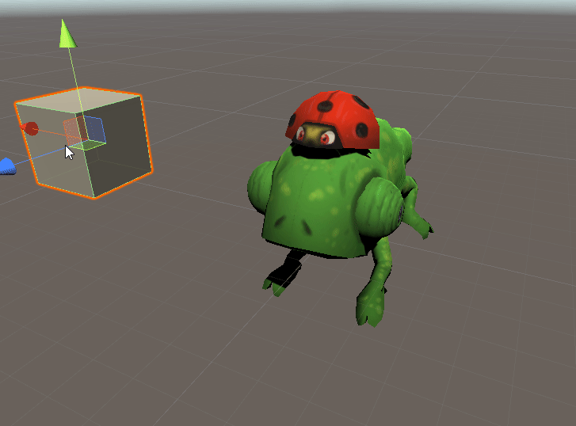
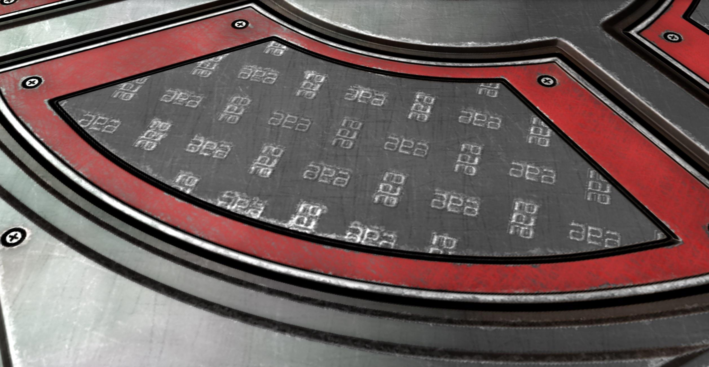
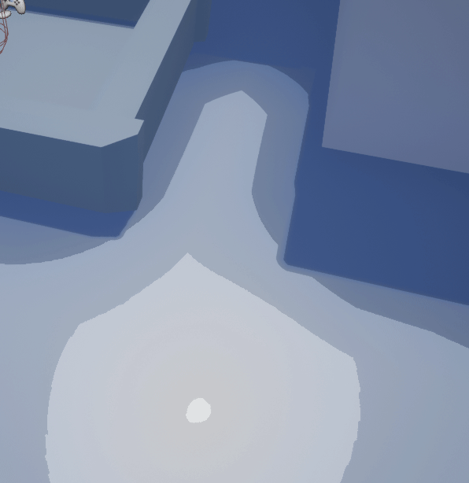
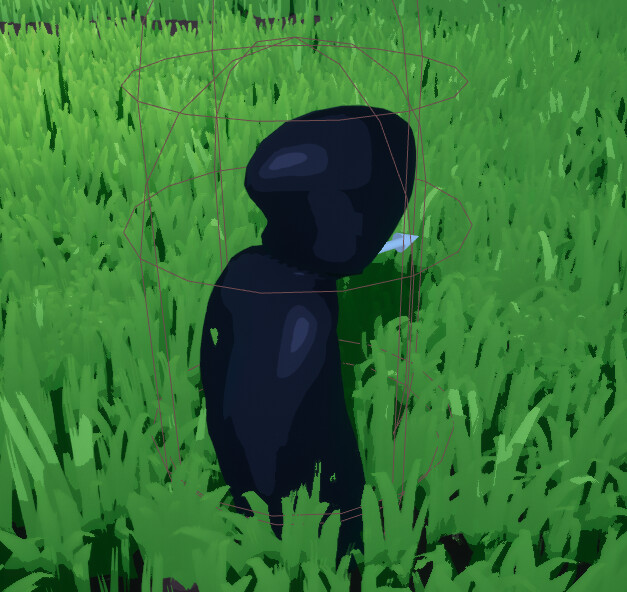

This was a rigging project I used to explore procedural animation, and get more comfortable programming in Unity.
What is procedural animation?
Typically your game character will have a set of artfully crafted animations that you can switch to and blend between in code. In this case, procedural animation means the animation is driven entirely by code using no pre-generated data, other than the rig.
Check out Alan Zucconi’s tutorial series on this subject for more information on the math I used.

I started by implementing head turning. You'd think this would be simple but it starts getting complex when you want to make everything look more natural.
First you get a vector by subtracting the target and chameleon's head position, you convert that vector into a quaternion, clamp that by the relative angle the vector creates with his neck so it doesn't bend too far, and then intrepolate the result using a spherical interpolation function to smooth the transition.
All the parameters are serialized so that they can be adjusted to get the best look on the fly inside the Unity editor.
Th inverset kinematics are done with a basic IK script. Because I don't have any complex knee motion it's a simple 2-bone IK with pole vectores to indicate which direction the bones colapse in. At some point here I remade the entire rig in Maya so that all the joints would be rotated the same way, making the math in Unity waaay simpler.
the last step was programming the walk cycle. The basic idea was to have the root of the Chameleon float over and slowly rotate to face the target. then the legs will calculate when and where to relocate with code.
parented to the hips i have locators positioned near all the feet. This would act as a home. If a foots home drifted too far away from its current planted location it would lift up, and replant nearby.
if you were working with a more complex rig you could combine this technique with keyframed animations but for this simple Chameleon rig it works perfectly!
The first time I can remember doing GPU profiling was 2 years ago. I was working on this small Unreal project, Billy's Adventure, and my group tasked me with figuring why the game would gradually slow down, and after a few minutes, run at 10, maybe 20 FPS.

A quick glance at the GPU visualizer and it was pretty clear what was going on. 90% of the frame time was being eaten up by dynamic point lights. tens of thousands of them infact. These were being spawned in by a mushroom asset placed throughout the entire level. thousands of little fireflies would spawn in over the course of a few minutes destroying performance.
Rather than disabling the lights all-together I figured a better solution would be to give the fire flies a percent chance to light the area around them. This way you get lights popping in an out without the same performance cost.
Other than that we added dynamic culling on the grass so that it would only render in such high density 3000 units of range from the player.
More recently, I revisited Splinter of Regret to see what I could learn through GPU profiling.
Splinters was made for PC and well within spec so there weren't many oddities to investigate. However, I was interested to see what it would take to bring our draw calls down to something more acceptable on mobile. In splinters, even with 100s of projectiles on screen the preformance never got very bad because of mesh instancing. We sat right around 750 draw calls.
My immediate reaction was that we use quite a lot of our budget on volumetric fog. Not super important since the game plays with a 3/4 view facing the ground. I simply turned that off leaving the default heigh fog. Another easy change would be replacing the fog with a depthfade post-processing effect and more skylight to offset the light bouncing that is lost.
Although small, Another improvement was merging all the static enviornment actors in the scene. This amounted to roughly 100 draw calls on each level.
By far the biggest saving was from converting to baked lighting. At any given moment lighting was eating atleast half of our budget. In some of the frames I looked at a point light was hogging more than 30 draw calls. Not super surprising, but by converting to static lighting draw calls went down by 200-300 depending on the number of lit objects. Of course, new light maps had to be generated on objects that were previously not UV mapped very well to fix visual artifacts.
Another big one was OcclusionCulling. Basically, Unreal was relying on less efficient methods of culling to figure out whether or not to draw objects in the level. because We have a fixed camera angle/distance an obvious optimization is to cull entirely by distance since, with the exception of certain edge cases that could be excluded like in the tutorial level, the edge of what is seen stays a fixes distance away from the player. This came out to around 60 saved draw calls but was highly dependant on how large any given level was.
The next stop was translucency. We had so many objects that didnt need to be translucent or at the very least could be masked instead. A lot of objects were made translucent with the assumption that at some point they might have an animated fade-in or some other effect. Changing that saved another 40 draw calls.
The final big save was from shadows, The shadow cost had already gone down quite a bit when switching from dynamic lighting. Not a whole lot to say here, but switching shadow quality to low cut the number of draw calls they were using in half.
There were a few other small changes I made including switching to a single componenet lens flare that cost 1 draw call instead of Unreal's default that Cost 11.
In the end, I was able to cut down levels clocking in as high as 783 draw calls down to 328. Still kinda high for mobile but substantially better from before without affecting the look of the game that much.
I stopped here but I'm sure I could take the number even lower. one angle would be to avoid stencil tracing. I used stencil tracing on the player, enemies, and objects that I want to outline or exclude from projections. finding a more efficient solution would save 50 or so draw calls.
I used RenderDoc for frame analysis.

Link to the post on Artstation here.
I knew from the start of this project that I wanted to do some sort of swarm missile effect. Not too different from Kai'Sa's 'Q' ability in League of Legends or the missiles in Gundam.
I did some quick research on different ways to go about creating the different projectile paths. I didn't want to use Unreal's built in projectile system or hand animate everything in sequencer. Controlling the projectile paths entirely with Niagara was off the table since I didn't want to limit my ability to experiment with logic on the projectile payload. I ended up going with an interesting compromise. All of the projectile paths would be created by generating splines on the go in a blueprint.
The basic idea is that I create a spline between 2 points that roughly looks like what I want, write down the relative position of the vectors used to create that spline. Then spawn that same arangement in with code instead. The magic comes when you use randomness to vary the locations of the vecors or directions of the tangents.
In the above code I have 2 different splines being created, each with their own random offsets and variation. When each projectile spawns I can then choose from different projectile behaviours to get even more variation. You can go totally crazy with this, but I went with only 2 for now to save time.

every frame these splines are being adjusted so that they always lead to their selected target. At the same time, the projectiles are moved by calculating a distanced traveled at their respective speed and then using Unreal's Get Location at Distance Along Spline function.
The result is some pretty interesting homing projectile behavior. Even before adding in any artistic nuances or fourish.
I used some nifty tricks when creating the soal coasters for the crystal charging effect.
What are soul coasters?
Soul coasters are a fun word for trail shaped mesh particles you use to pan flowing textures over. Typically energy-like effects you want to travel over predetermined paths in space.
I like to make mine in Maya using curves. You can draw a few lines and quickly fill in the space using curve extrude or loft.
For this project I made the alpha using this really great online tool. You can get some super interesting shapes without much effort. Link here.
Doing that alone still feels pretty static and there are clearly visible hard edges to the effect. The real interest comes when you layer multiple particles with different variations in location/rotation and pan a mask over everything so there is some breakup.
Now unfortunately with this effect I kind of worked myself into a corner. I wanted to have a translucent soulcoaster, wrapping around a crystal, which I had unfortunately already made translucent for the spawn in animation. Unreal doesn't know how to handle ordering translucent objects very well and because the crystal wasn't a particle I couldn't fix it with simple sort ordering.
I decided to use a trick I picked up from Simon Trümpler.
For his effect he avoids sorting issues by splitting the outside and inside of the effect into 2 seperate meshes.
I created a duplicate of my mesh in maya, then flipped all the normals. Then you just switch both materials to be 1-sided and spawn them at the exact same spot. This comes with the added complication of needing to sync up both meshes but you can do this by injecting the same seed or using material parameter collections. Whatever is needed.

For the explosion I wanted to have a reality distorting look to it, I saw what I could do with refraction and even added a dolly zoom! Although I'm not sure it was needed, still fun though.

To create the suction effect I modeled a funnel and slapped on a translucent material with an index of refraction that gradually increases near the center. The result is you get a nice black hole effect. It's important to keep the edges exactly and an index of 1 to match the surrounding air.

After that you can throw it into a particle system and animate the intensity of the effect over time. You want the funnel to be slightly missaligned from the camera though, otherwise you won't actually see it.
I posted the final result on Artstation here.
Link to the post on Artstation here.
For this effect I was inspired by a GDC talk that Eben Cook at Naught Dog gave on liquid effects. He does some complex simulation to get the exact look he wants but my goal was to just experiment with Threshold animations by painting something quick textures in photoshop.

The way a treshhold animation works is that rather than using the gradient of value to define a material's shape. At each level of value you paint what you would like the material to look like over the corse of it's life.
For example, at the early stage of this blood particles life it might resemble what's going on in the top left. It's at it's largest size, and no breakup has occured. Over the course of it's life though you can see it start to get smaller and break up. So as you increase the value you're painting with you draw more and more breakup. Afterwards you can blur it all together to get a more gradual shift.
Here I have a threshold animation where as you get lower and lower on the particle, the threshold keeps increasing until nothing but the highest value portions of the texture (the droplets) show up.

Putting this material on a ribbon already looks pretty cool, but the ribbon is a bit static and the droplets sort of "freeze" in place rather than fly off like you'd expect.
I improve this by making the ribbon expand over time and launching particles off of the tip of the blade.

Link to the post on Artstation here.
The first post-proccessing shader I made for Splinters of Regret was a damage indicator for when you were hit by our special damage type "burden damage".
I started by making a texture multiplication shader that just adds some cool pixelated fractal textures together giving it a sort of "cyborg corruption" look to it and then I Used some of the same texture as a scalable erosion element for fading it in and out.

Next I used a radial gradient exponential to mask the center, turning it into more of a vignette effect. I also added in time dilation, UV distortion, and chromatic aberration.

Then I used a radial gradient exponential to mask the center, turning it into more of a vignette effect. I also added in time dilation, UV distortion, and chromatic aberration.
the way the game was designed is that after taking too much burden damage, the player would "splinter" casting a shockwave out through the level making the combat more difficult for a short period of time.
I decided that it would be interesting if the "shockwave" that was sent out is actually just a mask between 2 different post processing effects. Basically, shockwave goes out and makes the game black and white, Collapsing when the segment ends. The way I achieved this was with 2 Identical masks in both materials controlled by a material parameter collection. That way I could simply increase and decrease the shockwave with a single float without having to change or merge either effect.

I made some interesting assets for splinters of regret. Most of them could get away with being somewhat low detail because of our deres effect.
The sword I made was quick and dirty but works pretty well with all the effects layered ontop of it. The stretch joint was for blur frames in animation.
up close without the final post-processing the flaws are a lot more noticeable.
One of the abilities I worked on we ended up scrapping. You would be able to spend charges you gained during combat. Transforming them intro crystal pillars that reflects damage to enemies when hit. I experimented with using blendshapes to create this effect.
In blender you are able to shrink wrap 1 object onto another and create a blendshape between them. This is not your normal use case for blenshapes but it is interesting that you can make them behave almost like a 3D version of the tween effect in Adobe Flash.
For the final effect I use some math to create rotating points around the player for the crystals to transform towards, then it's as simple as interpolating their position.
Some prototype UI I made for splinter of Regret
This Houdini network allows you to quickly create baked destrucable object animations. It takes a prop mesh as an input and some masking to define where you want the inner structure to be.
Fantasy great axe I sculpted in ZBrush. The texture is meant to be a porous rock like basalt with lots of cavities.
Link to Imgur album here.
Some legacy texture work I did for university pay hommage to the EAE program.

Post-processing effect that take looks at the diffuse color pass and colpases the gradient of color into different thresholds to get a cel shaded look.

This technique has some downsides though, You either have to use decals for colored lighting or inject it back into the image through post-processing. Unfortunately the lighting will ignore the banding and render normally if you do it that way.

Link to Github page here.
Discord bot I wrote from scratch in Node.js. Libraries used: Discord.js, ytdl-core, play-dl, ytsr
Features the ability to play youtube videos over voice, either with URL or keyword search commands, spam protection, an anti-tamper system that messages you a clean invite link when the bot detects any integration changes, or one of your friends kicks the bot to get around the spam filter. (looking at you Nevle)

lots of pointless commands and inside jokes.